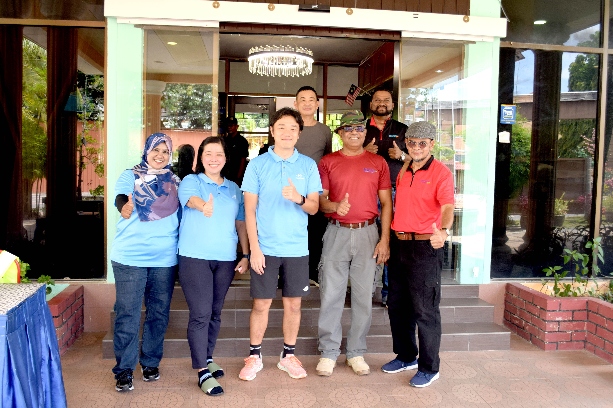
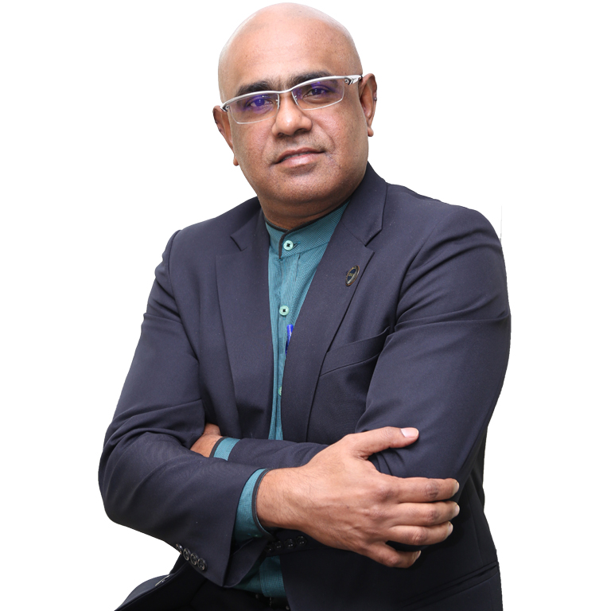
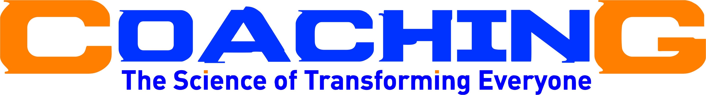

Pioneering Talent Transformation & Human Excellence since 2000

Freedom Discovery Management Sdn Bhd is a professional training solution provider and Business Development Consulting partner, committed to unlocking human potential, strengthening leadership capability, and driving sustainable business growth.
Delivering structured learning systems and transformational, performance-driven consulting since 2000.
Serving organizations across Malaysia, Singapore, Indonesia, India, Brunei & Cambodia.
TTT, Coaching, Leadership Mastery, AI & Future Tech, and Business Development programs.
We foster an open, growth-driven learning environment — ensuring individuals and organizations adapt effectively to evolving industry demands and empowering every participant to take full ownership of their performance and development journey.
Began career in management roles, building the foundational experience to design and implement customized business and training solutions for employees at all levels.
Established Freedom Discovery Management Sdn Bhd as a HRD Corp registered training solution provider and Business Development Consulting partner in Kedah, Malaysia.
Over 21 years as a Business Strategist and Consultant, mentoring and guiding organizations across Malaysia, Singapore, Indonesia, India, Brunei, and Cambodia in Network Marketing and Service Industries.
Completed service with distinction as a member of the Voluntary Territorial Army under the Ministry of Defence — instilling the discipline and leadership values that define our training culture.
Launched dedicated AI and Future Tech training programs, equipping Malaysian organizations with Generative AI and Machine Learning skills to stay ahead in a rapidly evolving world.
We develop proprietary training methodologies that combine neuroscience-based thinking models, coaching psychology, and practical business strategy.
Our proprietary Thinking Skills Training — a structured cognitive framework enhancing strategic thinking, clarity in decision-making, and the ability to innovate. Through our Brain Management programs, participants learn to manage their thinking processes effectively, performing at higher levels both professionally and personally.
Our Inner-Self Discovery, Recovery, Victory & Freedom model enables individuals to recognize their potential, overcome internal limitations, and achieve sustainable performance growth. We integrate coaching techniques and structured facilitation tools to ensure learning translates into practical application and behavioural change.
Over 25 years supporting organizations across Malaysia, Singapore, Indonesia, India, Brunei, and Cambodia — serving Educational Institutions, Manufacturing industries, Service organizations, Multi-Level Marketing companies, MNCs, SMEs, and corporate enterprises through Consultation, Mentoring, Coaching, and specialized training programs.
Comprehensive programmes designed to bridge competency gaps, elevate workforce performance, and produce measurable, lasting results.

@ Coach Nan
Master Life Coach, ATD Master Trainer® & Leadership Strategies

Coach Nan is a highly accomplished Certified Master Trainer by ATD USA and Corporate Trainer with more than 29 years of experience in Consulting, Business Strategy Development, Training, Motivation, and Transformational Coaching. Holding a major in Business Management and Development, he is well-recognized for delivering practical, innovative, and impactful solutions that drive both personal and organizational success.
Throughout his career, he has designed and conducted a wide variety of developmental programs including Leadership and Management, Motivation and Personal Development, Sales and Marketing, Psychological Communication using NLP, Time and Change Management, Conflict Management, Emotional and Social Intelligence, Pro-Inno Thinking Mindset, New Age and Reality Leadership with Coaching, Train the Trainer, Customer Service, and Team Building — all tailored to corporate goals and performance outcomes.
With a reputation for excellence, he has trained more than 450,000 participants across Asia, representing government bodies, manufacturing and service sectors, insurance and banking industries, and educational institutions. As a coach, he has accumulated over 8,000 professional coaching hours supporting leaders, entrepreneurs, and teams to break limitations and accelerate results.
Beyond training, he brings over 21 years of experience as a Business Strategist and Consultant for Network Marketing and service organizations across Malaysia, Singapore, Indonesia, Brunei, India, Cambodia, and beyond — well-known for his hands-on approach in solving real business challenges and implementing customized strategies that accelerate growth and capability enhancement.
Driven by a strong passion for transformation and continuous improvement, Coach Nan is committed to empowering individuals and organizations to achieve excellence. His innovative mindset, exceptional facilitation skills, and deep understanding of human behaviour have positioned him as a trusted partner in the development of high-performing leaders and effective organizations throughout Asia.
"Transformation begins from within. My mission is to equip every individual with the thinking tools, coaching skills, and strategic clarity to achieve freedom — personally and professionally."
— Pathmanatan V E Govindasamy @ Coach NanReady to accelerate your growth with Coach Nan and the Freedom Discovery team?
Get in Touch →